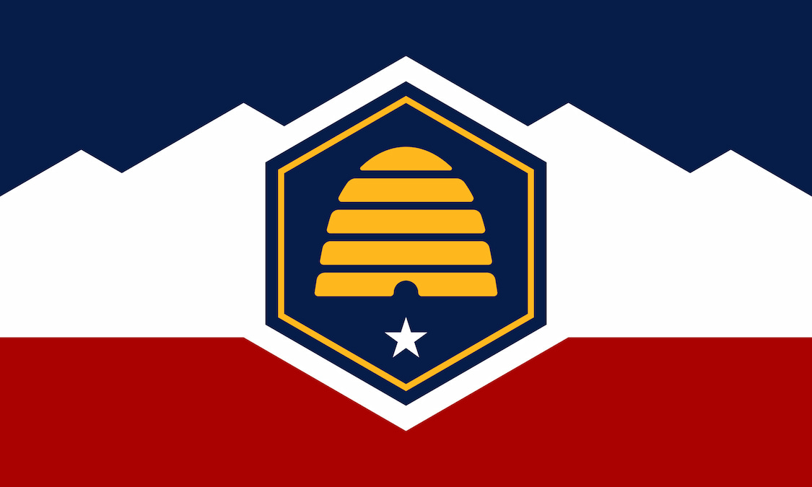

Vladyslav Rudenko
About Me
My name is Vladyslav and I go by Vlad. I live in Eagle Mountain, Utah. I currently study Software Development at BYU - I online. Some of my hobbies are astronomy, astrophotography and hiking. Also, my absolutely favorite pets are Golden Retrievers.
Utah, USA

Utah is a Western U.S. state famous for its northern ski mountains, southern red-rock national parks, and its capital, Salt Lake City, which houses the headquarters of The Church of Jesus Christ of Latter-day Saints.